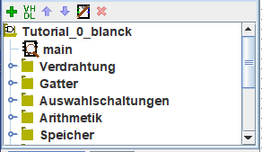
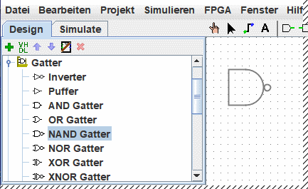
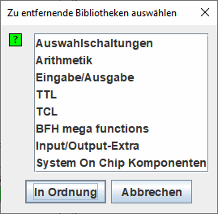

Das Übersichtsfenster
|  | Das Navigationspanel hat zwei Funktionen. Sie kann die aktuell simulierten Schaltkreise in der Simulationsansicht anzeigen oder, wie hier, die Schaltkreise oben in der Liste und die Bibliotheken unten durch Ordnersymbole darstellen. Diese Bibliotheken fassen die Werkzeuge zusammen, die Sie in Ihren Realisierungen verwenden können. |
Logisim verwaltet seine Werkzeuge in Bibliotheken. Diese werden als Verzeichnisse im Übersichtsfenster angezeigt. Um auf die Bauelemente einer Bibliothek zuzugreifen, brauchen Sie lediglich auf das entsprechende Verzeichnis doppelzuklicken. Hier sehen Sie die geöffnete Gatter-Bibliothek mit dem ausgewählten NAND-Gatter. Logisim ist jetzt dazu bereit NAND-Gatter zur Schaltung hinzuzufügen.

Wenn Sie sich jetzt die Auswahl in der Gatter-Bibliothek ansehen, so werden Sie bemerken, daß wir eigentlich gar keine XOR-Schaltung hätten entwickeln müssen: ein solches Gatter ist bereits Bestandteil von Logisim.
Wenn Sie ein neues Projekt anlegen, so enthält dieses automatisch bereits die folgenden Bibliotheken:
- Câblage : Les composants qui ont directement avoir avec le câblage.
- Gatter : Bauelemente, die einfache logische Funktionen durchführen.
- Auswahlschaltungen : komplexere kombinatorische Bauelemente, wie Multiplexer und Dekoder.
- Arithmetik : Bauelemente, die arithmetische Funktionen ausführen.
- Speicher : Bauelemente, die Daten speichern können, wie Flip-Flops, Register und RAM.
- Eingabe/Ausgabe : Bauelemente zur Interaktion mit dem Anwender.
- TCL :
- HDL-IP :
- BFH mega function :
Bibliothek
Über das Untermenü "Bibliothek laden" aus dem Projektmenü können Sie weitere Bibliotheken hinzufügen. Logisim besitzt drei Gruppen von Bibliotheken.
- Eingebaute Bibliotheken sind Bibliotheken, die fester Bestandteil von Logisim sind. Diese sind in der Bibliotheksreferenz dokumentiert.
- Logisim-Bibliotheken sind in Logisim entwickelte Projekte, die als Logisim-Projekte gespeichert wurden. Sie können eine Reihe von Schaltungen in einem einzelnen Projekt aufbauen (wie im Abschnitt Teilschaltungen dieses Leitfadens beschrieben), und diese dann später als Bibliothek für andere Projekte benutzen.
-
JAR-Bibliotheken sind Bibliotheken, die in Java erstellt werden, aber nicht fester Bestandteil von Logisim sind. Sie können fertige JAR-Bibliotheken von anderen Autoren herunterladen, oder Ihre eigenen erstellen, wie im Abschnitt JAR-Bibliotheken dieses Leitfadens beschrieben. Die Entwicklung einer JAR-Bibliothek ist aufwendiger, als die Erstellung einer Logisim-Bibliothek, aber die damit erstellten Bauelemente sind flexibler und erlauben sowohl die Vergabe von Attributen, als auch die Interaktion mit dem Anwender. Die eingebauten Bibliotheken (mit Ausnahme der Basis-Bibliothek) sind mit demselben API entwickelt worden, das auch die JAR-Bibliotheken benutzen können. Hieran können Sie den Umfang der Funktionen erkennen, die mit JAR-Bibliotheken verwirklicht werden können.
Einige JAR-Bibliotheken enthalten keinen Hinweis darauf, welche Java-Klasse der Bibliothek gestartet werden soll. Wenn Sie eine solche JAR-Bibliothek laden, wird Logisim Sie zur Eingabe des Namens der entsprechenden Klasse auffrodern. Der Name dieser Klasse sollte Ihnen vom Ersteller der JAR-Bibliothek mitgeteilt werden.
Um eine Bibliothek wieder zu entfernen, wählen Sie den menü | Projekt |→| Bibliotheken entfernen... |. Logisim erlaubt es Ihnen nicht, Bibliotheken zu entfernen, deren Bauelemente in einer Schaltung verwendet werden, die auf der Werkzeugleiste angezeigt wird, oder einer Maustaste zugeordnet ist.

Streng genommen enthält eine Bibliothek übrigens Werkzeuge, keine Bauelemente. So finden Sie in der Basis-Bibliothek das Schaltwerkzeug( ), das Bearbeitungswerkzeug(
), das Bearbeitungswerkzeug( ) und andere Werkzeuge, die keinen direkten Bezug zu einem spezifischen Bauelement aufweisen. Die meisten Bibliotheken enthalten aber Werkzeuge zum Hinzufügen individueller Bauelemente.
) und andere Werkzeuge, die keinen direkten Bezug zu einem spezifischen Bauelement aufweisen. Die meisten Bibliotheken enthalten aber Werkzeuge zum Hinzufügen individueller Bauelemente.
Weiter: Werkzeugleisten.